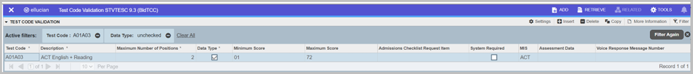
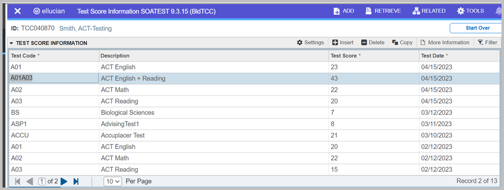
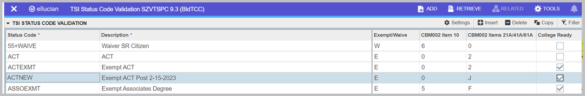
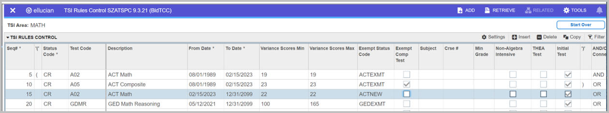
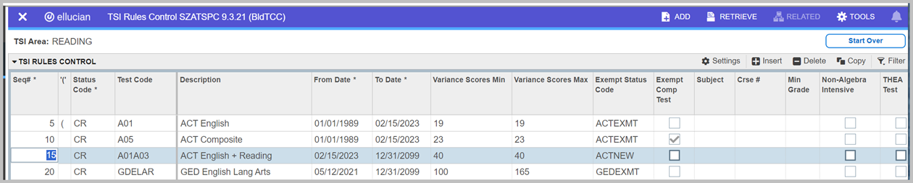
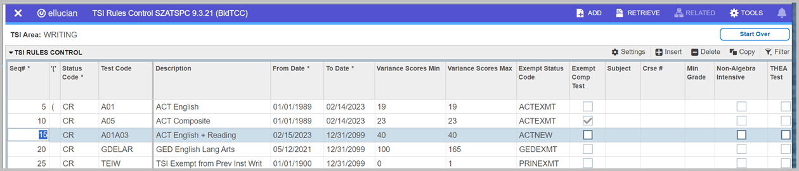
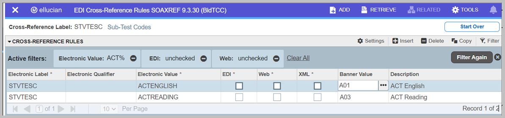

CBM Reports
CBM0E1 End of Term Student Report (SZRCBE1)
Use the the Student Data Report extract to report all students enrolled at the reporting institution as of the end of the term in courses for which credit hours are awarded.
Extracted data is mapped in the following documents:
- TCC TCC Student Student Data Map – Texas Community, Technical, and State Colleges
- TCC TCC Student Student Data Map – Texas Public Universities
The program is executed through TCC Student baseline Job Submission. The program reads the reportable data from the TCC Student Student tables, then inserts that data into the CBM reporting table, SZRCBE1. The process then extracts that data into the required format for transmittal to the THECB.
SZRCBE1 institutional planning
Use this page to understand the requirements for planning for CBM reporting. which should include reporting CBM0C1, CBM0CS, CBM00S, CBM0E1, CBM002, and CBM008 plus the CBM0C8 for universities for the same parameters, including Calendar year, semester, current terms, prior terms, and FICE.
Planning should include running SZRCBM1 and SZRCBMS before running SZRCBE1, SZRCBM2, and SZRCBM8. The CBM0E1, CBM002, and CBM008 reports depend on the data previously created by the SZRCBMS process and stored in the SZRCBMS table.
For universities, planning should include running the CBM0CS (SZRCBMS) before running the CBM0C8 (SZRCBM8). The CBM0C8 depend on data created by the CBM0C8 and stored in the SZRCBS table.
Following is a list of the dependencies:
- CBM0E1:
- Each non-flex student reported in CBM0C1 will also report in CBM0E1.
- Each Student and CRN combination reported by CBM00S will also report in CBM0E1.
- CBM002: Each Student reported by CBM00S will report in CBM002.
- CBM008: Each faculty assigned to a CRN reported in CBM00S is included in CBM008.
- CBM0C8: Universities report each faculty assigned classes on the CBM0CS.
Program parameters
- All parameters are single entry unless specified otherwise.
- All parameters are required unless specified otherwise.
- A listing of record counts and parameters used in creation of the report file are included in the %szrcbe1%.lis file.
- Data reported is contained in the database table SZRCBE1.
- Errors during the report extraction process are stored and viewable through the GZIERRS form.
| Field | Description |
|---|---|
| Calendar Year (YYYY)\ | Calendar year in which the semester occurs. This value reports as Item 14 (UN) or Item 19 (CC). This parameter is used for creation of the state DAT file. This parameter is not used for data selection. |
| Current Term Code (YYYYNN) | Current term (or terms) for which enrollments are reported. Courses from these terms are reported as non-FE or FE (1) based on the SZASXRF FE-Census Indicator. The terms listed should match those run by the CBM00S End of Term report. Multiple terms codes are allowed. (STVTERM) |
| Prior Term Code (YYYYNN) | Prior term or terms for which enrollments are reported. All relevant courses from these terms are reported as Spanned Term FE (6). The terms listed should match those run by the CBM00S End of Term report. Multiple term codes are allowed. (STVTERM) |
| FICE Code (XXXXXX) | Institution FICE code for which the report will run. This value reports as Item 2. |
| Semester Code (N) | 1 for Fall, 2 for Spring, 3 for Summer, or 4 for Summer II. This value reports as Item 13 (UN) or Item 18 (CC). |
| Employee Name | Employee responsible for submitting CBM reports. For example, John Smith. |
| Employee EMAIL Address | Email address of the employee responsible for submitting CBM reports. For example, jsmith@abc.edu. |
| File name | Optional. Directory path and file name, up to a maximum of 30 characters, for CBM0E1 report file placement through Job Submission. The directory path is a network drive that has the necessary security and permissions which allow read and write access for the user community responsible for CBM reporting. Example: /data/cbreports/0E1. File Type is not needed. For both institution types this process creates two files as follows:
|
| Reporting Institution Type | Enter C or U.
|
SZRCBE1 record selection
The CBM00S process must run before SZRCBM2, SZRCBM8, and SZRCBE1 as the CBM00S results are used for record selection and balancing of the other three reports.
A student record is reported if the student previously reported in the CBM00S report for the same FICE Code, Semester, Year, and Term (current or prior) as designated by the SZRCBMS and SZRCBE1 parameters.
SZRCBE1 data processing considerations
Many data items are reported directly from the data reported and stored by the SZRCBMS process in the SZRCBMS database table.
Student information listed below will report as of the earliest term reporting in either the Current or Prior Term parameters:
- Tuition Status
- Residence
- Transfer/First time in College
- Tuition Waiver or Exemption (report blank if no value)
- Remote Campus (report blank if no value)
- Classification
- Program and Major Area of Concentration
- Type Major
- Student Intent
- Restricted Program Admission
- Student characteristics, such as Academically Disadvantaged
Baccalaureate reporting for community colleges
TCC Banner Student 8.29.1 includes new functionality that community college can use to report third-year and fourth-year Baccalaureate (Bachelor Degree) students on the CBM0C1, CBM0CS, CBM00S and CBM0E1 processes.
Institutions can attach a Banner attribute to those students who should be reported. For example, each institution can create an attribute on the Student Attribute Validation (STVATTS) page to identify third-year students that are in Baccalaureate (Bachelor Degree) programs. Each institution can also create an attribute on the Student Attribute Validation (STVATTS) page to identify fourth-year students that are in Baccalaureate (Bachelor Degree) programs. The updated attributes are required and should be populated as follows:
- B3YR
- Bachelor Degree Third Year
- B4YR
- Bachelor Degree Fourth Year
- Continue normal daily processes as per their institutional best practices.
- Run reports at the appropriate times as defined by THECB.
- Follow the recommendations in TCC Banner Student use.
CBM0C1 Student Data Report (SZRCBM1)
Use the Student Data Report extract which reports all students enrolled at the reporting institution as of the official census date in courses for which credit hours are awarded.
Extracted data is mapped in the following documents:
- Data Map – Texas Community, Technical, and State Colleges
- Data Map – Texas Community, Technical, and State Colleges
The program is executed through TCC Student baseline Job Submission. The program reads the reportable data from theBanner Student tables and inserts that data into the CBM reporting table SZRCBM1. The process then extracts that data into the required format for transmittal to the THECB. SZRCBM1 can be run multiple times and will delete the records for the previous run for that semester.
Beginning with the Spring of 2022, the CBM0C1 becomes the CBM0C1 and reports primarily demographic data. The semester credit hour and contact hour data will now be collected on the CBM0CS.
Program parameters
A listing of record counts and parameters used in creation of the report file are included in the %szrcbm1%.lis file.
Data reported is contained in a database table entitled SZRCBM1.
| Field | Description |
|---|---|
| Calendar Year (YYYY) | Calendar year in which the semester occurs. This parameter is used for creation of the state DAT file and is used to populate the Year item. This parameter is not used for data selection. |
| Current Term Code (YYYYNN) | Current term or terms for which enrollments are reported. Multiple terms codes can be entered. See below for instructions. |
| Prior FE Term Code (YYYYNN) | Prior FE term (or terms) for which enrollments are reported. Sections are reported in this term or terms if the Flex Entry Indicator is selected on SZASXRF. Multiple term codes can be entered. See below for instructions. |
| FICE Code (XXXXXX) | Institution FICE code for which the report will run. Only one FICE code can be entered. |
| Semester Code (N) | 1 for Fall, 2 for Spring, 3 for Summer, or 4 for Summer II |
| ID Prefix (X) | Replaces the TCC Student ID Prefix, such as @, in the TCC Student ID if the SSN is not available. Required. |
| Employee Name | Employee responsible for submitting CBM reports. For example, John Smith. |
| Employee EMAIL Address | Email address of the employee responsible for submitting CBM reports. For example, jsmith@abc.edu. |
| File name | Optional. Directory path and file name, up to a maximum of 30 characters, for CBM0C1 report file placement through Job Submission. The directory path is a network drive that has the necessary security and permissions which allow read and write access for the user community responsible for CBM reporting. Example: /data/cbreports/001. File Type is not needed. This process creates four files as follows:
|
| Reporting Institution Type | Enter C or U.
|
To enter more than one Term code for the Current Term or Prior FE Term parameter, perform the following steps:
- Position cursor on the Prior FE Term parameter line on either the Number field or Values field.
- Click the Copy button.
- Enter the new prior Term Code in the Values column.
- Repeat as needed.
A student who has reportable enrollment in multiple prior Flex Entry terms will have the data combined into a single prior term record. The rules for handling multiple terms when combining them into one record are as follows:
- Non-term specific demographic or report term data items are extracted and included in the output data file as always.
- Tuition Status; Residence, and Transfer/First time in College are reported using the value attached to the earliest effective FE term for the student.
- Tuition Waiver or Exemption and Remote Campus are reported using blank if no terms include a value, or with the value from the earliest effective FE term for the student.
- Classification; Major Area of Concentration; Type Major; Student Intent; and Restricted Program Admission are reported using the values attached to the latest effective FE term for the student.
- Student characteristics, such as Academically Disadvantaged, are reported if the associated value is entered for any of the terms in the Prior FE Term parameter.
- The values reported for contact hours and for semester credit hours in the associated data fields are summed from the multiple FE terms.
A student who has reportable enrollment in multiple Current terms have the data combined into a single term record. The rules for handling multiple terms when combining them into one record are as follows:
- Non-term specific demographic or report term data items are extracted and included in the output data file.
- Tuition Status; Residence, and Transfer/First time in College are reported using the value attached to the earliest effective Current term for the student.
- Tuition Waiver or Exemption and Remote Campus are reported using blank if no terms include a value, or with the value from the earliest effective Current term for the student.
- Classification; Major Area of Concentration; Type Major; Student Intent; and Restricted Program Admission are reported by using the values attached to the latest effective Current term for the student.
- Student characteristics, such as Academically Disadvantaged, are reported if the associated value is entered for any of the terms in the Prior Current Term parameter.
- The values reported for contact hours and for semester credit hours in the associated data fields are summed from the multiple Current terms.
Example
If the SZRCBM1 is run with Current Term Code parameters of 201610, 201611, and 201612, the following are true:
- If the student is enrolled in each of the reported Terms, then data from SZASSTD and SGASTDN for each of those Terms is considered when the report data is extracted.
- If the student is enrolled only in Terms 201611 and 201612, then the CBM0C1 data is extracted only from the SZASSTD and SGASTDN 201611 and 201612 records. The 201610 SZASSTD and SGASTDN records are ignored for this student.
- If the student is enrolled only in Term 201612 then the CBM0C1 data is extracted only from the SZASSTD and SGASTDN 201612 records. The 201610 and 201611 SZASSTD and SGASTDN records are ignored for this student.
See the most recent TCC Student Data Map for additional information.
Baccalaureate reporting for community colleges
TCC Banner Student 8.29.1 includes new functionality that community college can use to report third-year and fourth-year Baccalaureate (Bachelor Degree) students on the CBM0C1, CBM0CS, CBM00S and CBM0E1 processes.
Institutions can attach a Banner attribute to those students who should be reported. For example, each institution can create an attribute on the Student Attribute Validation (STVATTS) page to identify third-year students that are in Baccalaureate (Bachelor Degree) programs. Each institution can also create an attribute on the Student Attribute Validation (STVATTS) page to identify fourth-year students that are in Baccalaureate (Bachelor Degree) programs. The updated attributes are required and should be populated as follows:
- B3YR
- Bachelor Degree Third Year
- B4YR
- Bachelor Degree Fourth Year
- Continue normal daily processes as per their institutional best practices.
- Run reports at the appropriate times as defined by THECB.
- Follow the recommendations in TCC Banner Student use.
SZRCBM1 error messages
A TCC page, General Errors Inquiry (GZIERRS), is used to report errors produced by a TCC process that are not easily identified. This form is an inquiry form and may contain errors produced by a number of TCC reports or processes.
The number of Oracle-related errors produced by SZRCBM1 and posted to this form are included in the SZRCBM1%.LIS file.
Recommendation
Review the SZRCBM1%.LIS file or the GZIERRS form after every submission to determine if errors are posted to GZIERRS.
Review the %.txt file because might contain a message that GZIERRS needs to be reviewed. This message is not acceptable if submitting to the THECB and is easily removable using a text editor.
CBM002 TSI Report (SZRCBM2)
This process is the Texas Success Initiative Report which will report all Undergraduate students attempting credit hours or required for reporting through the Texas Success Initiative purposes.
This report is intended to match the CBM00S report and includes Flex Entry records for the previous term but excludes flex entry classes in the current term. Extracted data is mapped in the following documents:
- Data Map – Texas Community, Technical, and State Colleges
- TCC Banner Student Data Map – Texas Public Universities
The program is executed through TCC Student baseline Job Submission. The program reads the reportable data from the Banner Student tables, then inserts that data into the CBM reporting table SZRCBM2. The process then extracts that data into the required format for transmittal to the THECB.
The CBM002 report specifically requires reporting the TSI Status as of the beginning of term, which is specifically designated as the same term census date used for the CBM0C1. If multiple terms are entered, the first term listed is presumed the reporting term from which a census date is read and used to extract TSI Status information for the beginning of the term (census date). The Census 1 date is retrieved from Part of Term 1 (sobptrm_census_date where sobptrm_ptrm_code = 1). The Term End Date parameter has been added to indicate the TSI Status at the end of term.
Program parameters
- There are twelve (12) report parameters used for compiling the report, all of which are required.
- A listing of record counts and parameters used in creation of the report file are included in the
%szrcbm2%.lisfile. - Data reported is contained in the database table SZRCBM2.
- Errors during the report extraction process are stored and viewable through the GZIERRS form.
- Data reported is contained in a database table entitled SZRCBM2.
| Field | Description |
|---|---|
| Calendar Year (YYYY) | Enter the calendar year the report is submitted. This value populates item 5. This parameter is not used for data selection. |
| Term Code (YYYYNN) | Enter the term code or codes used to extract information (for example, 200910) as of the beginning of term. The first term code entered should be the full term from which the POT 1 Census Date ( Flex entry terms which are part of the current reporting semester should not be included in this parameter; they should be listed the following semester in the Prior FE Term parameter to correctly extract Flex Entry data. |
| SZRTXSI Current Term End Date (DD-MMM-YYYY) | Enter the Institution selected End Date of the latest Term Code (parameter 2) reported. The parameter end date for the term is used to determine the proper SZATXSI sequence record to extract for reporting the end of term TSI status and data. Recommendation: This date can be the day after grade roll and end of term processing has completed for the latest Term Code in parameter 2 above. |
| Flex Entry Term Code (YYYYNN) | Enter the term code or codes for which Flex Entry TSI Status information is reported. The Term Codes should be the same as those reported through CBM00S (SZRCBMS) for the same Calendar Year and Reporting Period. |
| SZRTXSI FE Term End Date (DD-MMM-YYYY) | Enter the Institution selected End Date of latest Prior FE Term (Parameter 4) reported. The parameter end date for the Prior FE term is used to determine the proper SZATXSI sequence record to extract Flex Entry end of term TSI status and data. Recommendation: This date can be the day after grade roll and end of term processing has been completed for the latest Prior FE Term code in parameter 4 above. |
| FICE Code | Enter the reporting institution FICE code. The FICE code is used in the header record and inserted into each record (Item 2) of the report. |
| Semester code | Enter appropriate state THECB Reporting value. This parameter is inserted into each record (Item 4) of the report. |
| ID Prefix | Enter a letter or number which is used to replace a non-numeric first character in TCC Student generated IDs extracted for students without an SSN. This value will replace the non-numeric first character of system generated IDs in the output data file. System generated IDs are reported only when the SPAPERS SSN ( |
| Employee Name | Enter the Reporting Official name as it should appear in the header record of the report. |
| Employee Email Address | Enter the email address of the person submitting the report as it should appear in the header record of the report. |
| File name | Optional. Enter the directory path and file name, up to a maximum of 30 characters, for the CBM002 output file placement through Job Submission. The directory path is a network drive that has the necessary security and permissions which allow read and write access for the user community responsible for CBM reporting. For example: /data/cbreports/002. File Type is not needed. This process creates two files as follows:
|
| Institution Type | Enter C for community college or U for university. |
SZRCBM2 record selection
The CBM00S process must run before SZRCBM2, SZRCBM8, and SZRCBE1 as the CBM00S results are used for record selection and balancing of the other three reports.
A student record is reported if the student previously reported in the CBM00S report for the same FICE Code, Semester, Year, and Term (current or prior) as designated by the SZRCBMS parameters.
Report all undergraduate students included in the SZRCBMS table.
Grade changes are not reported.
Following are the requirements for reporting in CBM002.
- The student must have been reported in CBM00S (SZRCBMS) and their record stored in table SZRCBMS for the same Reporting Period (Semester, Year, Terms) and FICE Code.
- A record viewable on SPAPERS is required.
- A record viewable on SZATXSI is required.
- The Student Curriculum Level (
sorlcur_levl_code) for the Reporting Term must equal the Level defined by the GTVSDAX rule STUDENTLVL.
Special note for COVID-19 placement waiver
As of Spring 2023, the COVID-19 waiver is no longer valid. You should update the records for students who have a COVID-19 waiver with their current TSI status on the TSI Student Information (SZATXSI) page. A value of Z on Items 20, 21A, 24, 40, 41A, 44, 60, 61A, 64 is no longer valid and will result in a reporting error.
Special note for TSIA2 reporting
For Spring 2021 reporting, THECB added values to several CBM002 items to account for reporting TSIA2 scores. Items 22A/42A/62A, Assessment Test used at the Time of TSI Placement, now include a value of 9 for the TSIA2 test. Entries will be added to the GTVSDAX crosswalk, CBM2ATYP, for the TSIA2 Math, Reading, and Writing test codes to populate Items 22A/42A/62A.
For Item 42B, Reading Assessment Score Used for Initial Placement, the SZRCBM2 can now report the English Language Arts Reading score for TSIA2.
For Item 62B, Reading Assessment Score Used for Initial Placement, the SZRCBM2 can now report the English Language Arts Reading score for TSIA2.
For Items 80/81/82, Diagnostic Level Scores, the SZRCBM2 will report the values as recorded in the diagnostic fields on SZATXSI.
Set up new ACT scores
Describes how to set up new ACT scores.
Beginning with the ACT tests administered on or after February 15, 2023, Ellucian has instructed schools to use a combination of the Reading and English scores to determine ACT exemption. This change requires some additional set-up within Banner to record and report ACT exemptions.
STVTESC
ACT does not deliver a combined Reading and English score. Institutions must create a test code for this combination and record the result in SOATEST. In this example, a test code of A01A03 was created on STVTESC.

SOATEST
The combined score should be recorded in table SORTEST, viewable on page SOATEST.
The ACT reading score of 20 plus the ACT English score of 23 from April 15, 2023 combine to create the A01A03 entry of 43.

SZVTSPC
A new exempt code is needed on the TSI Status Code Validation page, SZVTSPC. This is necessary to be able to specify the value of J for the CBM002 Items 21A/41A/61A. The new exempt code will also be used in new TSI rules in the next step.

SZATSPC
Next, we need new rules on the TSI Rules Control page, SZATSPC. These rules will be used by SZPTSPU to mark a student ACT exempt under the new rules. Note that the old rules now have a To Date of 02/15/2023 and the new rules have a from date of 02/15/2023. These examples show the college ready or CR rules, but similar rules are needed for not college ready (NCR) and re-test required (RR) rules.



CBM002 and SOAXREF
- Each institution will create an SOAXREF entry for Cross-Reference Label STVTESC with an Electronic Value of ACTENGLISH and a Banner Value of the test code for ACT English scores. This is the test code you would see on SOATEST for ACT English scores.
- Each institution will create an SOAXREF entry for Cross-Reference Label STVTESC with an Electronic Value of ACTREADING and a Banner Value of the test code for ACT Reading scores. This is the test code you would see on SOATEST for ACT Reading scores.

SZRCBM2 error messages
A TCC page, General Errors Inquiry (GZIERRS), is used to report errors produced by a TCC process that are not easily identified. This form is an inquiry form and can contain errors produced by a number of TCC reports or processes.
The number of Oracle-related errors produced by SZRCBM2 and posted to this form are included in the SZRCBM2%.LIS file.
Recommendation
Review the SZRCBM2%.LIS file or the GZIERRS form after every submission to determine if errors are posted to GZIERRS.
Review the %.txt file as it can contain a message that GZIERRS needs to be reviewed. This message is not acceptable if submitting to the THECB and is easily removable through a text editor.
Following is a list of the data values contained in the bottom window of the GZIERRS form which are populated when the SZRCBM2 process produces an Oracle error:
| Field | Description |
|---|---|
| PIDM | PIDM being processed when the error occurred. |
| ID | ID being processed when the error occurred. |
| Key Value 3 | SSN or Student ID processing when the error occurred. |
| Key Value 4 | Report Term |
| Key Value 5 | FICE |
| Key Value 6 | Report Period (Semester Code) |
| Key Value 7 | Report Year (Calendar year) |
| Key Value 8 | Flex Entry indicator. A value of N indicates this is not a Flex Entry course. A value of Y indicates this is a Flex Entry course. Example: Flex N is not a Flex Entry course. Example: Flex Y is a Flex Entry course. |
Special note
The previous SZRCBM2 errors are deleted each time SZRCBM2 runs. This reduces the number of records stored and viewable on the GZIERRS form.
CBM003 Course Inventory Update Report (SZRCBM3)
Use this process to create the Course Inventory Report.
Extracted data is mapped in the following documents:
- Data Map – Texas Community, Technical, and State Colleges
- Data Map – Texas Community, Technical, and State Colleges
The program is executed through TCC Student baseline Job Submission. The program reads the reportable data from the Banner Student tables and inserts that data into the CBM reporting table SZRCBM3. The process then extracts that data into the required format for transmittal to the THECB.
Program parameters
- A listing of record counts and parameters used in creation of the report file are included in the %szrcbm3%.lis file.
- Data reported is contained in a database table entitled SZRCBM3.
- This process does not update the field SZACXRF CBM3 UPDA Code (
sxrcxrf_upda_code).
| Field | Description |
|---|---|
| Academic Year (YYYY) | TCC Student Academic year for reporting period. Courses reporting must have an Effective Term record in SCACRSE with this Academic Year assignment on STVTERM. |
| Reporting Year (YYYY) | THECB Reporting Year. For example, if reporting 2010 – 2011 Academic Year, enter 2010 for Reporting Year. |
| FICE Code (XXXXXX) | Institution FICE code for which the report will run. Only one FICE code can be entered. |
| Employee Name | Employee responsible for submitting CBM reports. For example, John Smith. |
| Employee EMAIL Address | Email address of the employee responsible for submitting CBM reports. For example, jsmith@abc.edu. |
| File name | Optional. Enter the directory path and file name, up to a maximum of 30 characters, for CBM003 report file placement through Job Submission. The directory path is a network drive that has the necessary security and permissions which allow read and write access for the user community responsible for CBM reporting. Example: /data/cbreports/003 File Type is not needed. This process creates two files as follows:
|
CBM005 Building and Room Report (SZRCBM5)
This process is the Room and Building Report which will include data reflecting building and room assignments as of the twelfth class day of the fall semester only.
Extracted data is mapped in the following documents:
- Data Map – Texas Community, Technical, and State Colleges
- TCC Banner Student Data Map – Texas Public Universities
The program is executed through TCC Student baseline Job Submission. The program reads the reportable data from the Banner Student tables and inserts that data into the CBM reporting table SZRCBM5. The process then extracts that data into the required format for transmittal to the THECB.
Program parameters
- A listing of record counts and parameters used in creation of the report file are included in the %szrcbm5%.lis file.
- Data reported is contained in the database table SZRCBM2.
- Errors during the report extraction process are stored and viewable through the GZIERRS form.
| Field | Description |
|---|---|
| Calendar Year (YYYY) | Calendar year for reporting period. This parameter is used for creation of the state DAT file and is used to populate the Year item. This parameter is not used for data selection. |
| Term Code (YYYYNN) | Used for data selection of CRNs to report. |
| Prior Term Code (YYYYNN) | Prior term used for determining student classification for reporting enrollments in Items 15 for the University report. This parameter is not used for determining which CRNs will report. Option: Enter the same value as in Term Code parameter. Not used by Community Colleges. |
| FICE Code (XXXXXX) | Institution FICE code for which the report will run. Only one FICE code may be entered. |
| Semester Code (N) | 1 for Fall, 2 for Spring and 3 for Summer |
| Employee Name | Employee responsible for submitting CBM reports. For example, John Smith. |
| Employee EMAIL Address | Email address of the employee responsible for submitting CBM reports. For example, jsmith@abc.edu. |
| File name | Optional. Enter the directory path and file name, up to a maximum of 30 characters, for CBM005 report file placement through Job Submission.The directory path is a network drive that has the necessary security and permissions which allow read and write access for the user community responsible for CBM reporting. Example: /data/cbreports/005 File Type is not needed. This process creates two files as follows:
|
| Reporting Institution Type | Enter C or U.
|
SZRCBM5 error messages
A TCC page, General Errors Inquiry (GZIERRS), is used to report errors produced by a TCC process that are not easily identified.
This form is an inquiry form and can contain errors produced by a number of TCC reports or processes.
The number of Oracle-related errors produced by SZRCBM1 and posted to this form are included in the SZRCBM5%.LIS file.
Recommendation
- Review the SZRCBM5%.LIS file or the GZIERRS form after every submission to determine if errors are posted to GZIERRS.
- Review the %.DAT file as it can contain a message that GZIERRS needs reviewed. This message is not acceptable if submitting to the THECB and is easily removable using a text editor.
CBM0C8 Census Faculty Report (SZRCBM8)
This process is the Census Faculty Report and is used to collect data on the faculty teaching courses during the reporting terms.
Whereas the CBM008 also includes other academic duties and services, the CBM0C8 only includes faculty who are responsible for teaching the courses reported on the CBM0CS, Census Student Schedule Report. Extracted data is mapped in the following documents:
- TCC Banner Student Data Map – Texas Community, Technical and StateColleges
- TCC Banner Student Data Map – Texas Public Universities.
The Census Faculty Report is for universities only and begins in the Spring 2022 term. Please note that the CBM0C8 is produced with the same job sub process as the CBM008. Use SZRCBM8 in job sub with a value of "C" for the Report Period parameter to produce the Census Faculty Report.
The program is executed through Banner baseline Job Submission. The program reads the reportable data from the Banner Student tables and inserts that data into the CBM reporting table SZRCBM8. The process then extracts that data into the required format for transmittal to the THECB.
Program parameters
| Field | Description |
|---|---|
| Calendar Year | Enter the calendar year being reported. This parameter is used for creation of the state DAT file and is used to populate the ‘Year’ item. This parameter is NOT used for data selection. |
| Current Term | Current term (or terms) for which enrollments are reported. Multiple terms codes may be entered (The Term Code(s) should be the same as those reported using CBM00S (SZRCBMS) for the same Calendar Year and Reporting Period). If a record is stored for a faculty member in each of the Current Terms entered then a record for each of those Terms is included in the CBM008 report. |
| Prior FE Term | Prior terms for which Flex Entry enrollments are selected. Multiple Prior FE Term parameters may be entered, allowing the institution to report multiple Flex Entry terms. The Term Codes should be the same as those reported using CBM00S (SZRCBMS) for the same Calendar Year and Reporting Period. |
| FICE Code | Institution FICE code for which the report will run. Only one FICE code may be entered |
| Semester Code | State Code, 1 for Fall, 2 for Spring and 3 for Summer |
| ID Prefix | Replaces the Banner ID Prefix (such as ‘@’) in the Banner Id if the SSN is not available. Required. |
| Employee Name | Name of employee responsible for submitting CBM reports |
| Employee Email Address | Email address of employee responsible for submitting CBM reports. (for example: jsmith@abc.edu) |
| Filename | Optional. Directory path and file name (max size 30 characters) for CBM008 report file placement through Job Submission. The directory path is a network drive that has the necessary security and permissions which allow read and write access for the user community responsible for CBM reporting. Example: /data/cbreports/008 File Type is not needed. This process creates four files as follows:
|
| Reporting Institution Type | Enter ‘C’ or ‘U’.
|
| Report Period | Enter 'C' or 'E'
For Community Colleges, a 'C' is not valid and will result in an error message in the log file. |
| Note: | A listing of record counts and parameters used in creation of the report file are included in the %szrcbm8%.lis file. Data reported is contained in a database table entitled SZRCBM8. |
Record Selection
The CBM0CS (SZRCBMS) process must run before producing the CBM0C8 as the CBM0CS results are used for record selection.
Each faculty assigned to a CRN which reported in the CBM0CS will report in CBM0C8, other administrative duties will not.
CBM008 Faculty Data Report (SZRCBM8)
This process is the Faculty Report and is used to collect data on the academic duties and services of each person who has any type of faculty appointment.
Extracted data is mapped in the following documents:
- Data Map – Texas Community, Technical, and State Colleges
- TCC Banner Student Data Map – Texas Public Universities
The program is executed through TCC Student baseline Job Submission. The program reads the reportable data from the Banner Student tables and inserts that data into the CBM reporting table SZRCBM8. The process then extracts that data into the required format for transmittal to the THECB.
Program parameters
| Field | Description |
|---|---|
| Calendar Year | Enter the calendar year being reported. This parameter is used for creation of the state DAT file and is used to populate the Year item. This parameter is not used for data selection. |
| Current Term | Current term (or terms) for which enrollments are reported. Multiple terms codes may be entered (The Term Codes should be the same as those reported by CBM00S (SZRCBMS) for the same Calendar Year and Reporting Period). If a record is stored for a faculty member in each of the Current Terms entered then a record for each of those Terms is included in the CBM008 report. |
| Prior FE Term | Prior terms for which Flex Entry enrollments are selected. Multiple Prior FE Term parameters may be entered, allowing the institution to report multiple Flex Entry terms. The Term Codes should be the same as those reported by CBM00S (SZRCBMS) for the same Calendar Year and Reporting Period. |
| FICE Code | Institution FICE code for which the report will run. Only one FICE code can be entered. |
| Semester Code | State Code, 1 for Fall, 2 for Spring and 3 for Summer |
| ID Prefix | Replaces the TCC Student ID Prefix (such as @) in the TCC Student ID if the SSN is not available. Required. |
| Employee Name | Employee responsible for submitting CBM reports. For example, John Smith. |
| Employee Email Address | Email address of the employee responsible for submitting CBM reports. For example, jsmith@abc.edu. |
| File name | Optional Directory path and file name, up to a maximum of 30 characters, for CBM008 report file placement through Job Submission. The directory path is a network drive that has the necessary security and permissions which allow read and write access for the user community responsible for CBM reporting. Example: /data/cbreports/008 File Type is not needed. This process creates four files as follows:
|
| Reporting Institution Type | Enter C or U.
|
| Report Period | Enter C or E. For the CBM0C8 or Census Faculty Report, enter C. For the CBM008 or end of term Faculty Report, enter E. For Community Colleges, a C is not valid and will result in an error message in the log file. |
SZRCBM8 record selection
The CBM00S process must run before SZRCBM2, SZRCBM8, and SZRCBE1 as the CBM00S results are used for record selection and balancing of the other three reports.
- Each faculty assigned to a CRN which reported in the CBM00S will report in CBM008.
- Each faculty that is not assigned to a CRN which reported in the CBM00S but has a record viewable on the SZAFACC or SZAFACU forms for the terms designated by the SZRCBM8 parameters will also report.
CBM0CS Census Student Schedule Report (SZRCBMS)
The CBM00S (SZRCBMS) is provided to create the CBM00S data file and the comma-delimited (CSV) file. The data extracted by this process is stored in a Banner database table, SZRCBMS, which is then used for reporting CBM00S, CBM0E1, CBM002 and CBM008.
Program parameters
All parameters are single entry unless specified otherwise.
All parameters are required unless specified otherwise.
A listing of record counts and parameters used in creation of the report file are included in the %szrcbms%.lis file.
Data reported is contained in the database table SZRCBMS.
Errors during the report extraction process are stored and viewable using the GZIERRS form. These include issues such as a non-graded course or a missing SZASSTD record for University students. An error may report for each Student and CRN combination.
| Field | Description |
|---|---|
| Calendar Year (YYYY) | Calendar year in which the semester occurs. This value reports as Item 28 (UN) or Item 30 (CC). This parameter is used for creation of the state DAT file, This parameter is NOT used for data selection. |
| Current Term Code (YYYYNN) | Current term (or terms) for which enrollments are reported. Courses from these terms are reported as non-FE or FE (‘1’) based upon the SZASXRF FE-Census Indicator. The terms listed should match those run by the CBM0C1 census date report. Multiple terms codes are allowed (STVTERM). |
| Current Term End Date (DD-MMM-YYYY) | Last date of the Current Term. Courses in the Current Term ending on or before this date are reported. |
| Prior Term Code (YYYYNN) | Prior term (or terms) for which enrollments are reported. All relevant courses from these terms are reported as Spanned Term FE (‘6’). Multiple term codes are allowed (STVTERM). |
| Prior Term End Date (DD-MMM-YYYY) | Last date of the Prior Term. Courses in the Prior Term ending after this date are reported as Spanned Term FE. |
| FICE Code (XXXXXX) | Institution FICE code for which the report will run. This value reports as Item 2. |
| Semester Code (N) | 1 for Fall, 2 for Spring, 3 for Summer, or 4 for Summer II. This value reports as Item 27 (UN) or Item 29 (CC). |
| ID Prefix (X) | Replaces the Banner ID special character prefix (such as ‘@’) in the Banner Id if the SSN is not available. |
| Employee Name | Employee responsible for submitting CBM reports (Ex: John Smith). |
| Employee EMAIL Address | Email Address of employee responsible for submitting CBM reports (Ex: jsmith@abc.edu). |
| Filename | Optional. Directory path and file name (max size 30 characters) for CBM00S report file placement through Job Submission. The directory path is a network drive that has the necessary security and permissions which allow read and write access for the user community responsible for CBM reporting. Example: /data/cbreports/00S File Type is not needed. This process creates four files as follows:
|
| Reporting Institution Type | Enter ‘C’ or ‘U’.
|
| Report Period | Enter 'C' or 'E' For the CBM0CS or Census Student Schedule Report, enter 'C'. For the CBM008 or end of term Student Schedule Report, enter 'E'. |
CBM00S (SZRCBMS) institutional planning
Planning for CBM reporting should include reporting CBM0C1, CBM0CS, CBM00S, CBM0E1, CBM002, CBM0C8 (universities) and CBM008 for the same parameters, including Calendar year, semester, current terms, prior terms, and FICE.
Planning should include running SZRCBM1 and SZRCBMS before running SZRCBE1, SZRCBM2 and SZRCBM8. The CBM0E1, CBM002 and CBM008 reports depend upon the data previously created by the SZRCBMS process and stored in the SZRCBMS table.
For universities, planning should include running the CBM0CS (SZRCBMS) before running the CBM0C8 (SZRCBM8). The CBM0C8 depends on data created by the CBM0CS and stored in the SZRCBMS table.
Following is a list of the dependencies:
- CBM0E1:
- Each non-flex student reported in CBM0C1 will also report in CBM0E1.
- Each Student and CRN combination reported by CBM00S will also report in CBM0E1.
- CBM002: Each Student reported by CBM00S will report in CBM002.
- CBM008: The CBM008 will report the faculty information for each CRN reported in CBM00S.
Record selection
The CBM00S process must run before SZRCBM2, SZRCBM8 and SZRCBE1 as the CBM00S results are used for record selection and balancing of the other three reports.
A student course completion is only reported if the course (CRN) is in a Term designated by the Current Term Code parameter or by the Prior Term parameter.
FE and non-FE considerations
- For terms listed in the Prior Term parameters which will report as Spanned Term FE with a value of ‘6’ requirements include the following:
- The SZASXRF FE-Span (szrsxrf_span_fe) indicator for the CRN is checked.
- The SSASECT End Date is AFTER the Prior Term End Date parameter.
- For the terms listed in the Current Term parameters which will report as NON FE requirements include the following:
- The SZASXRF FE-Span (szrsxrf_span_fe) indicator for the CRN is NOT checked.
- The SZASXRF FE-Census (szrsxrf_fe) indicator is NOT checked.
- The SSASECT End Date is before or on the day designated by the Current Term End Date parameter.
- For the terms listed in the Current Term parameters which will report as FE with a value of ‘1’ requirements include the following:
- The SZASXRF FE-Census (szrsxrf_fe) indicator IS checked.
- The SSASECT End Date is before or on the day designated by the Current Term End Date parameter.
Institutional considerations
Each institution is responsible for accurately selecting the FE indicator flags on SZASXRF to ensure appropriate FE reporting.
NCBO intervention courses consideration
In order for the NCBO intervention course to be reported on the CBM00S, the SZASXRF Classification Flag is defined as Developmental.
RSTS code considerations
A student course completion is included in the CBM00S report if the RSTS code (SZAREGS Status - sfrstcr_rsts_code) is listed on SZARCBR form, tab RSTS Codes, with a checked Indicator for 00S.
Each institution must ensure the SZARCBR RSTS Codes are listed with the appropriate boxes checked. The following are useful in determining which RSTS Codes should report:
- Do not report ‘Audit’s. (The SZRCBMS process will ignore all RSTS Codes of ‘AU’.)
- Report all students, even those who have withdrawn or registered after the Census Date and who have zero (0) SCHs.
- Report course completions of students enrolled in only Pass/Fail graded courses.
- Report course completions rolled to Academic History with a grade defined on SZARCBR, tab Grades.
- Report course completions not rolled to Academic History. For example, non-graded lab course completions will report with a blank grade.
Data processing considerations
Use the GTVSDAX rule CBMNOLIMIT to eliminate a state funded course from counting toward undergraduate limits for funding. This functionality may be relevant for courses such as High School Dual Credit which are state funded but are not required to count toward the state limit.
Student information listed below will report as of the EARLIEST term reporting in either the Current or Prior Term parameters:
- Tuition Status
- Residence
- Transfer/First time in College
- Tuition Waiver or Exemption (report blank if no value)
- Remote Campus (report blank if no value)
- Classification
- Program and Major Area of Concentration
- Type Major
- Student Intent
- Restricted Program Admission
- Student characteristics, such as Academically Disadvantaged
- Developmental Education Course/Intervention
Following is a list of possible choice combinations from the drop-down list for SZASXRF Type 1 and Type 2 and the resulting value reported through CBM00S (SZRCBMS):
SZASXRF TSI Development Ed
Type 1
SZASXRF TSI Development Ed
Type 2
CBM00S Item 22 (CTC)
Or
CBM00S Item 19 (Univ)
None None 0 None Course 1 None Intervention 4 None Self-Paced 7 None Co-requisite 8 Course None 1 Course Course 1 Course Intervention 4 Course Self-Paced 7 Course Co-requisite 8 Intervention None 4 Intervention Course 4 Intervention Intervention 4 Intervention Self-Paced 7 Intervention Co-requisite 8 Self-Paced None 7 Self-Paced Course 7 Self-Paced Intervention 7 Self-Paced Self-Paced 7 Self-Paced Co-requisite 8 Co-requisite None 8 Co-requisite Course 8 Co-requisite Intervention 8 Co-requisite Self-Paced 8 Co-requisite Co-requisite 8
Baccalaureate reporting for community colleges
TCC Banner Student 8.29.1 includes new functionality that community college can use to report third-year and fourth-year Baccalaureate (Bachelor Degree) students on the CBM0C1, CBM0CS, CBM00S and CBM0E1 processes.
Institutions can attach a Banner attribute to those students who should be reported. For example, each institution can create an attribute on the Student Attribute Validation (STVATTS) page to identify third-year students that are in Baccalaureate (Bachelor Degree) programs. Each institution can also create an attribute on the Student Attribute Validation (STVATTS) page to identify fourth-year students that are in Baccalaureate (Bachelor Degree) programs. The updated attributes are required and should be populated as follows:
- B3YR
- Bachelor Degree Third Year
- B4YR
- Bachelor Degree Fourth Year
- Continue normal daily processes as per their institutional best practices.
- Run reports at the appropriate times as defined by THECB.
- Follow the recommendations in TCC Banner Student use.
CBM009 Graduation Report (SZRCBM9)
This process is the Graduation Report which will reflect degrees conferred during the fiscal year immediately preceding the fall semester in which the report is submitted.
Extracted data is mapped in the following documents:
- Data Map – Texas Community, Technical, and State Colleges
- TCC Banner Student Data Map – Texas Public Universities
The program is executed through TCC Student baseline Job Submission. The program reads the reportable data from the Banner Student tables and inserts that data into the CBM reporting table SZRCBM9. The process then extracts that data into the required format for transmittal to the THECB.
Program parameters
The report, when run, deletes the previous results for the same Year and Term Code combination and includes new results for the same Year, regardless of Term Code. This functionality may seem to provide results that are not valid if it is run in the same year for different terms. Be aware that technical assistance is needed to remove records from the table for a Year and Term Code combination that are no longer needed.
- A listing of record counts and parameters used in creation of the report file are included in the %szrcbm9%.lis file.
- Data reported is contained in the database table SZRCBM9.
| Field | Description |
|---|---|
| Calendar Year (YYYY) | Calendar year for reporting period. This parameter is used for creation of the state DAT file and is used to populate the Year item. This parameter is not used for data selection. |
| Term Code (YYYYNN) | Used for data selection. Enter the Term Codes being reported. Only degrees awarded during or before this term are included in the report. These degrees are viewable through the Degree and Other Formal Awards form – SHADEGR and are stored in table SHRDGMR. This term is compared to the SHADEGR field – Graduation Term. For example, choose the SHADEGR record where the Graduation Term ( |
| FICE Code (XXXXXX) |
Institution FICE code for which the report will run. Only one FICE code can be entered.
Note: If an institution has multiple FICE Codes then the GTVSDAX rule MULTIFICE is used to require a Campus Code in the SHADEGR record.
|
| Reporting Period (N) | Enter the Reporting Period. This value is always 1. |
| ID Prefix (X) | Replaces the TCC Student ID Prefix, such as @, in the TCC Student ID if the SSN is not available. Required. |
| Start Date (DD-MON-YYYY) | For data selection. Enter the earliest date completed for which graduation records are selected. All awards (Degree, CCC, or FOS) must be awarded after this date for inclusion in the report. The graduation date ( |
| End Date (DD-MON-YYYY) | For data selection. Enter the latest date completed for which graduation records are selected. All awards (Degree, CCC, or FOS) must be awarded before this date for inclusion in the report. The graduation date ( |
| Core Program | Community College Only: Enter the Core Program as entered on the Major CIP Code Validation page (SZVMCIP). Validated by SMAPRLE (SMRPRLE_PROGRAM). Required for Community College only. University Only: Enter Blanks. |
| Select Progress Measures by Campus | Default is N. Community College Only: Enter Y if the SZAPGMS records for Core and Field of Student completions are selected based on the assigned SZAPGMS Campus. If the SZAPGMS Campus is blank the record is reported regardless of this parameter. Single Value only. Required. |
| Employee Name | Employee responsible for submitting CBM reports. For example, John Smith. |
| Employee EMAIL Address | Email address of the employee responsible for submitting CBM reports. For example, jsmith@abc.edu. |
| File name | Optional Enter the directory path and file name, up to a maximum of 30 characters, for CBM009 report file placement through Job Submission. The directory path is a network drive that has the necessary security and permissions which allow read and write access for the user community responsible for CBM reporting. Example: /data/cbreports/006 File Type is not needed. This process creates two files as follows:
A listing of record counts and parameters used in creation of the report are included in the %sxrcbm%.lis file. |
| Reporting Institution Type | Enter C or U.
|
SZRCBM9 record selection
Following are additional details regarding the use of Campus Code when extracting records for Community Colleges only.
- Core Completions (Item 7 is CCC): If the SZAPGMS Core Curriculum Completion Completed Date (
szbpgcc_complete_date) contains a value and the CB Reported Date (szbpgcc_reported_date) is blank this student is considered for reporting as Core Complete in Item 7. Additional Campus Code considerations follow:- If the SZAPGMS Completed Date contains a value this record may report.
- If the SZAPGMS CB Reported Date contains a value this record will not report. If the SZAPGMS CB Reported Date does not contain a value this record will report.
- If the SZAPGMS Core Curriculum Completion Campus Code (
szbpgcc_campus) is blank or null this record is reported. - If the SZRCBM9 parameter Select Progress Measures by Campus is N the record is reported.
- If the SZRCBM9 parameter Select Progress Measures by Campus is Y and the SZAPGMS Core Curriculum Completion Campus Code (
szbpgcc_campus) contains a value this record is reported only if the SZAPGMS Campus Code (szbpgcc_campus) crosswalks through the GTVSDAX CAMPFICE rule to the FICE Code entered as parameter FICE Code when the SZRCBM9 was submitted through TCC Student Job Submission. - All data items in the report record remain the same.
- Field of Study Completions (Item 7 is FOS): If the SZAPGMS Field of Study Completed Date (
szrpgfs_complete_date) contains a value and the Field of Study CB Reported Date (szrpgfs_reported_date) is blank this student is considered for reporting as Field of Study Complete in Item 7. Campus Code considerations follow:- If the SZAPGMS Completed Date contains a value this record may report.
- If the SZAPGMS CB Reported Date contains a value this record will not report. If the SZAPGMS CB Reported Date does not contain a value this record will report.
- If the SZAPGMS Field of Study Campus Code (
szbrpgfs_campus) is blank or null this record is reported. - If the SZRCBM9 parameter Select Progress Measures by Campus is N the record is reported.
- If the SZRCBM9 parameter Select Progress Measures by Campus is Y and the SZAPGMS Field of Study Campus Code (
szbpgfs_campus) contains a value this record is reported only if the SZAPGMS Field of Study Campus Code (szbpgfs_campus) crosswalks through the GTVSDAX CAMPFICE rule to the FICE Code entered as parameter FICE Code when the SZRCBM9 was submitted through TCC Student Job Submission. - All data items in the report record remain the same.
Following are additional details regarding the use of Campus Code when extracting the double major for Texas public universities only:
Following are the three circumstances under which a double major is reported through CBM009.
- One SHADEGR Degree record is awarded with one Program curriculum record attached and within that one Program curriculum two Fields of Study are assigned. The CIP of the first Field of Study reports as Item 9 and the CIP of the second reports as Item 20 in the same CBM009 record. The Program and both Fields of Study are Active and Current.
- One SHADEGR Degree record is awarded with two Program curriculum records attached. Those two Program curriculum records have the same Degree assigned. Each Program has one Field of Study assigned. The CIP of the Field of Study attached to the first Program is reported as Item 9 while the CIP of the Field of Study attached to the second Program is reported as Item 20 in the same CBM009 record. Both Programs and corresponding Fields of Study are Active and Current.
- Two SHADEGR Degree records are awarded, each with one Program and one Field of Study within each Program. Within each Program the Degrees are the same. The CIP of the Field of Study attached to the first SHADEGR record is reported as Item 9 while the CIP of the Field of Study attached to the second SHADEGR record is reported as Item 20 in the same CBM009 record. Both Programs and corresponding Fields of Study are Active and Current.
In all of the above cases a SHADEGR Field of Study value along with a Program are used to extract the CIP from SZVMCIP for reporting in Item 20.
SZRCBM9 processing notes
Major CIP information for both Universities and Community Colleges is extracted from the Major CIP Code Validation page (SZVMCIP).
Before running the SZRCBM9 report process the majors or double majors reported by CBM009 must be defined on the TCC delivered Major CIP Code Validation page (SZVMCIP).
For Community Colleges only, the SZRCBM9 report will extract Core Curriculum and Field of Study completion information from the TCC table viewable through the Progress Measure page (SZAPGMS). Core Curriculum and Field of Study completer information recorded on the Degrees and Other Formal Awards page (SHADEGR) form is not used for CBM009 reporting.
For the Fall 2024 report changes, a new GTVSDAX entry has been introduced for community colleges, CB9NONFUND. This identifies the Award Status Code on SHADEGR that indicates an award is not fundable.
| Field | Value |
|---|---|
| Internal Code | CB9NONFUND |
| Sequence | Blank |
| External Code | Institutional value for the non-fundable award code used on SHADEGR |
| Description | Award status code for non-fund |
| Concept | Blank |
| Translation Code | Blank |
| Reporting Date | Blank |
| Sys | S (Student) |
| Sys Required | Unchecked |
| Details | Award status code from STVDEGS/SHADEGR that represents an awarded credential that is non-fundable. |
CBM00A Continuing Ed Report (SZRCBMA)
This process is the Students in Continuing Education Courses Report and will include all students enrolled as of the official census date in continuing education courses.
This report is submitted by Texas Community, Technical, and State Colleges only. Extracted data is mapped in TCC Student Banner Student Data Map – Texas Community, Technical, and StateColleges.
The program is executed through TCC Student baseline Job Submission. The program reads the reportable data from the Banner Student tables and inserts that data into the CBM reporting table SZRCBMA. The process then extracts that data into the required format for transmittal to the THECB.
Program parameters
A listing of record counts and parameters used in creation of the report file are included in the %szrcbm%.lis file.
Data reported is contained in a database table entitled SZRCBMA.
| Field | Description |
|---|---|
| Calendar Year (YYYY) | Calendar year for reporting period. This parameter is used for creation of the state DAT file and is used to populate the Year item. This parameter is not used for data selection. |
| Term Code (YYYYNN) | Used for data selection. |
| FICE Code (XXXXXX) | Institution FICE code for which the report will run. Only one FICE code may be entered. |
| Quarter (N) | 1 for Fall, 2 for Winter, 3 for Spring and 4 for Summer |
| ID Prefix (X) | Replaces the TCC Student ID Prefix, such as @, in the TCC Student ID if the SSN is not available. Required. |
| Start Date (DD-MON-YYYY) | For data selection. The SSASECT Census 2 Date (ssbsect_census_2_date) must be greater than or equal to this date. |
| End Date (DD-MON-YYYY) | For data selection. The SSASECT Census 2 Date (ssbsect_census_2_date) must be less than or equal to this date. |
| Employee Name | Employee responsible for submitting CBM reports. For example, John Smith. |
| Employee EMAIL Address | Email address of the employee responsible for submitting CBM reports. For example, jsmith@abc.edu. |
| File name | Optional Enter the directory path and file name, up to a maximum of 30 characters, for CBM00A report file placement through Job Submission. The directory path is a network drive that has the necessary security and permissions which allow read and write access for the user community responsible for CBM reporting. Example: /data/cbreports/00A File Type is not needed. This process creates four files as follows:
|
CBM00B Admissions Report (SZRCBMB)
This process is the Admissions Report and is used to collect data regarding who applies, who is admitted and who subsequently enrolls at each institution.
This report is submitted by Texas Public Universities only.
Extracted data is mapped in the TCC Banner Student Data Map – Texas Public Universities.
The program is executed through TCC Student baseline Job Submission. The program reads the reportable data from the Banner Student tables and inserts that data into the CBM reporting table SZRCBMB. The process then extracts that data into the required format for transmittal to the THECB.
Program parameters
- A listing of record counts and parameters used in creation of the report file are included in the %szrcbm%.lis file.
- Data reported is contained in a database table entitled SZRCBMB.
- The process first deletes the previously saved data in the SZRCBMB table by the Application Year, Term Code, FICE Code and Reporting Period parameters. Data is then read from TCC Student and saved to the table according to the parameters. The data is extracted from the SZRCBMB table and included in the DAT report by Application Year and FICE. This allows for more flexible reporting options by Term Code.
| Field | Description |
|---|---|
| Application Year (YYYY) | Year for which admissions is sought. This parameter is used for creation of the state DAT file only and not used for data selection. |
| Term Code (YYYYNN) | Used for data selection of SZRSSTD record. Choose the most recent SZRSSTD record for the student that is less than or equal to this Term Code |
| FICE Code (XXXXXX) | Institution FICE code for which the report will run. Only one FICE code can be entered. |
| Reporting Period (N) | Enter the Reporting Period. This value is always 5. |
| ID Prefix (X) | Replaces the TCC Student ID Prefix, such as @, in the TCC Student ID if the SSN is not available. Required. |
| Employee Name | Employee responsible for submitting CBM reports. For example, John Smith. |
| Employee EMAIL Address | Email address of the employee responsible for submitting CBM reports. For example, jsmith@abc.edu. |
| File name | Optional Enter the directory path and file name, up to a maximum of 30 characters,for CBM00B report file placement through Job Submission. The directory path is a network drive that has the necessary security and permissions which allow read and write access for the user community responsible for CBM reporting. Example: /data/cbreports/00B File Type is not needed. This process creates two files as follows:
|
SZRCBMB error Messages
A TCC page, General Errors Inquiry (GZIERRS), is used to report errors produced by a TCC process that are not easily identified.
This form is an inquiry form and can contain errors produced by a number of TCC reports or processes.
The number of Oracle-related errors produced by SZRCBMB and posted to this form are included in the SZRCBMB%.LIS file, as shown in the following example.
Total Header Records: 1
Total Trailer Records: 1
GZIERRS ERRORS*****: 3
Total CBM00B Records: 1236Recommendation
- Review the SZRCBMB%.LIS file or the GZIERRS form after every submission to determine if errors are posted to GZIERRS.
- Review the %.DAT file as it may contain a message that GZIERRS needs to be reviewed. This message is not acceptable if submitting to the THECB and is easily removable using a text editor.
Following is a list of the data values contained in the bottom window of the GZIERRS form which are populated when the SZRCBM2 process produces an Oracle error:
| Data Value | Description |
|---|---|
| PIDM | PIDM being processed when the error occurred. |
| ID | ID being processed when the error occurred. |
| Key Value 3 | Rpt ID – Student ID as designated in the report. |
| Key Value 4 | Report Term |
| Key Value 5 | FICE |
| Key Value 6 | Report Period (Semester Code) |
| Key Value 7 | Report Year (Calendar year) |
| Key Value 8 | App Levl – Application Level as designated in the report |
| Key Value 9 | Admit Term |
CBM00C Cont Ed Class Report (SZRCBMC)
This process is the Continuing Education Class Report which will report all students enrolled in Coordinating Board-approved continuing education courses on a quarterly basis.
This report is submitted by Texas Community, Technical, and State Colleges only. Extracted data is mapped in the TCC Banner Student Data Map – Texas Community, Technical, and StateColleges.
The program is executed through TCC Student baseline Job Submission. The program reads data from the Banner Student tables and inserts that data into the CBM reporting table SZRCBMC. The process then extracts that data into the required format for transmittal to the THECB.
Program parameters
A listing of record counts and parameters used in creation of the report file are included in the %szrcbm%.lis file.
Data reported is contained in a database table entitled SZRCBMC.
| Field | Description |
|---|---|
| Calendar Year (YYYY) | Calendar year for reporting period. (not Fiscal Year). This parameter is used for creation of the state DAT file and is used to populate the Year item. This parameter is not used for data selection. |
| Term Code (YYYYNN) | Used for data selection. Reported CRNs must be in this Term. |
| FICE Code (XXXXXX) | Institution FICE code for which the report will run. Only one FICE code can be entered. |
| Quarter (N) | 1 for Fall, 2 for Winter, 3 for Spring and 4 for Summer |
| Start Date (DD-MON-YYYY) | For CRN selection The SSASECT Census 2 Date ( |
| End Date (DD-MON-YYYY) | For CRN selection The SSASECT Census 2 Date ( |
| Employee Name | Employee responsible for submitting CBM reports. For example, John Smith. |
| Employee EMAIL Address | Email address of the employee responsible for submitting CBM reports. For example, jsmith@abc.edu. |
| File name | Optional Directory path and file name, up to a maximum of 30 characters, for CBM00C report file placement through Job Submission. The directory path is a network drive that has the necessary security and permissions which allow read and write access for the user community responsible for CBM reporting. Example: /data/cbreports/00C File Type is not needed. This process creates two files as follows:
|
CBM00E Doctoral Exception Report Process (SZRCBME)
This process is the Doctoral Exception Report which will report all students with Doctoral Exception information assigned on the Student Supplemental Page (SZASSTD).
This report will include only those students with the Doctoral Exception Flag (szrsstd_doctoral_report) on SZASSTD selected. This report is submitted by Texas Public Universities only.
Extracted data is mapped in the TCC Banner Student Data Map – Texas Public Universities.
The program is executed through TCC Student baseline Job Submission. The program reads the reportable data from the Banner Student tables and inserts that data into the CBM reporting table SZRCBME. The process then extracts that data into the required format for transmittal to the THECB.
Recommendation
Doctoral students may need a new record created on the Student Supplemental Data page (SZASSTD) before reporting the CBM00E (SZRCBME). The new record should contain updated fields such as Funding Limit Rule, Funding Limit Exception, Doctoral Hrs Accumulated, and Report Doctoral Exception. These fields help determine how a student is reported using the CBM00E (SZRCBME) report process. See the TCC Student Modifications User Guide for instructions on how to create a new SZASSTD record.
Program parameters
- A listing of record counts and parameters used in creation of the report file are included in the %szrcbm%.lis file.
- Data reported is contained in a database table entitled SZRCBME.
| Field | Description |
|---|---|
| FICE Code (XXXXXX) | Institution FICE code for which the report will run. Only one FICE code can be entered. |
| Report Year (YYYY) | Enter a four (4) digit YYYY year for the year the report is submitted. This parameter is used for creation of the state DAT file and is used to populate the Exception Year item. This parameter is not used for data selection. |
| Current Term Code (YYYYNN) | Enter the current term code used for selecting data. Records on forms SZASSTD, SGASTDN, and SHADEGR are chosen if the term displayed on the form is less than or equal to the term code indicated by this parameter. |
| ID Prefix (X) | Replaces the TCC Student ID Prefix, such as @, in the TCC Student ID if the SSN is not available. Required. |
| Employee Name | Employee responsible for submitting CBM reports. For example, John Smith. |
| Employee Email Address | Email address of the employee responsible for submitting CBM reports. For example, jsmith@abc.edu. |
| File name | Optional Directory path and file name, up to a maximum of 30 characters, for CBM00E report file placement through Job Submission. The directory path is a network drive that has the necessary security and permissions which allow read and write access for the user community responsible for CBM reporting. Example: /data/cbreports/00E File Type is not needed. This process creates four files as follows:
|
CBM00M State MSA Report (SZRCBMM)
This process is the Marketable Skills Achievement Report extract which will report students who have completed a Marketable Skills award and are listed on the Progress Measures page (SZAPGMS) with an appropriate Campus.
The program is executed through TCC Student baseline Job Submission. The program reads the reportable data from the Banner Student tables and inserts that data into the CBM reporting table SZRCBMM. The process then extracts that data into the required format for transmittal to the THECB.
Program parameters
- A listing of record counts and parameters used in creation of the report file are included in the %szrcbmm%.lis file.
- Data reported is contained in a database table entitled SZRCBMM.
| Field | Description |
|---|---|
| Year (YYYY) | Calendar year in which the semester occurs. This parameter is used for creation of the state DAT file and is used to populate the Year item. This parameter is not used for data selection. |
| Term Code (YYYYNN) | Current term or terms, for which enrollments are reported. Multiple terms code records are allowed (Duplicate Record, Insert Record). The highest or most recent Term Code entered is used to extract the student’s most recent curriculum rule which is then used to extract the CIP Code (Item 9) and Major Type (Item 13) for this student. |
| FICE Code (XXXXXX) | Institution FICE code for which the report will run. Only one FICE code can be entered. This FICE is reported as Item 2. This FICE is also used to extract Awards from the SZAPGMS MSA tab using the Campus Code field. |
| Reporting Period (N) | Enter the Reporting Period. This value is always 1. |
| ID Prefix (X) | Replaces the TCC Student ID Prefix, such as @, in the TCC Student ID if the SSN is not available. Required. |
| Start Date | The first date of the reporting period for which reportable MSA completions occurred. |
| End Date | The last date of the reporting period for which reportable MSA completions occurred. |
| Employee Name | Employee responsible for submitting CBM reports. For example, John Smith. |
| Employee Email Address | Email address of the employee responsible for submitting CBM reports. For example, jsmith@abc.edu. |
| File name | Optional Enter the directory path and file name, up to a maximum of 30 characters, for CBM00M report file placement through Job Submission. The directory path is a network drive that has the necessary security and permissions which allow read and write access for the user community responsible for CBM reporting. Example: /data/cbreports/00M File Type is not needed. This process creates four files as follows:
|
| Update CB Reported Date (Y/N) | Enter Y or N.
|
SZRCBMM error messages
A TCC page, General Errors Inquiry (GZIERRS), is used to report errors produced by a TCC process that are not easily identified. This form is an inquiry form and may contain errors produced by a number of TCC reports or processes.
The number of Oracle-related errors produced by SZRCBMM and posted to this form are included in the SZRCBMM%.LIS file. See below for an example:
Recommendations
Review the SZRCBMM%.LIS file or the GZIERRS form after every submission to determine if errors are posted to GZIERRS.
Review the %.txt file as it may contain a message that GZIERRS needs to be reviewed. This message is not acceptable if submitting to the THECB and is easily removable using a text editor.
SZRCBMM processing notes
Students are reported if the following are true on the MSA tab of the SZAPGMS form.
- The SZAPGMS Program Code (
szrpgsa_program_code) is not null and is not blank. - The SZAPGMS Campus Code (
szrpgsa_campus_code) meets one of the following conditions:- The SZAPGMS Campus Code is null or blank.
- The SZAPGMS Campus Code contains a value and this value crosswalks through the GTVSDAX rule CAMPFICE to the FICE entered in parameter 3.
- The SZAPGMS CB Reported Date (
szrpgsa_reported_date) is null or blank. - The SZAPGMS Completed Date (
szrpgsa_complete_date) contains a date and this date meets the following conditions:- The SZAPGMS Completed Date (
szrpgsa_complete_date) is after or the same as the Start Date input for parameter 6. - The SZAPGMS Completed Date (
szrpgsa_complete_date) is before or the same as the End Date input for parameter 7.
- The SZAPGMS Completed Date (
The SZAPGMS CB Reported Date is updated if the following are both true:
- SZRCBMM Parameter 11 - Update CB Reported Date (Y/N) is Y.
- The student has no errors listed in the Error report produced by the SZRCBMM process.
CBM00N Student Change Report (SZRCBMN)
This process is the Student Change Report which will extract data previously saved on the Student Previous ID Data page (SZAPRID).
All students with a blank CBM00N Submitted Date displayed on SZAPRID are included in the report. If no records have a null CBM00N Submitted Date then no records are extracted to the output data file.
This report process is for all institution types. The program is executed through TCC Student baseline Job Submission. The program reads the reportable data from theBanner Student tables and inserts that data into the CBM reporting table SZRCBMN. The process then extracts that data into the required format for transmittal to the THECB.
The SZRCBMN report process updates the CBM00N Submitted Date on the Student Previous ID Date page (SZAPRID) for records that were extracted to the state-formatted output file. Extracted data is mapped in the following documents:
- TCC Banner Student Data Map – Texas Community, Technical and StateColleges
- TCC Banner Student Data Map – Texas Public Universities.
Program parameters
| Field | Description |
|---|---|
| FICE Code (XXXXXX) | Institution FICE code for which the report will run. Only one FICE code can be entered. |
| Report Year (YYYY) | A four (4) digit YYYY year for the year the report is submitted. This parameter is used for creation of the state DAT file and is used to populate the Year item. This parameter is not used for data selection. |
| Semester | A one (1) digit reporting term code (1 through 4) for the semester the report is submitted. |
| Employee Name | Employee responsible for submitting CBM reports. For example, John Smith. |
| Employee EMAIL Address | Email address of the employee responsible for submitting CBM reports. For example, jsmith@abc.edu. |
| File name | Optional Enter the directory path and file name, up to a maximum of 30 characters, for CBM00N report file placement through Job Submission. The directory path is a network drive that has the necessary security and permissions which allow read and write access for the user community responsible for CBM reporting. Example: /data/cbreports/00N File Type is not needed. This process creates two files as follows:
A listing of record counts and parameters used in the flat file are included in the %szrcbm%.lis file. Data reported is contained in a database table entitled SZRCBMN. |
| ID Prefix | Replaces the TCC Student ID special character prefix (such as @) in the TCC Student ID if the SSN is not available. |
| Audit/Update | Allow the process to be run in either Audit or Update Mode. |
SZRCBMN report processing recommendations
Recommend running SZRCBMN in Audit mode before running in Update mode to review and verify that the data to be submitted is correct.
When non-error records exist with error records in the output data file there are two options for resolution and reporting all data through the output data file. The two options are listed below.
Option 1
- Delete the state formatted output file.
- Insert a new record for each non-error record on SZAPRID to allow these records to report again on the next run of SZRCBMN.
- Insert a new record for each error record on SZAPRID to allow these records to report again on the next run of SZRCBMN.
- Run the SZRCBMN process, then submit the new output data file to the Coordinating Board.
Option 2
- Delete error records from the output file.
- Submit the non-error records in the output data file to the Coordinating Board.
- Insert new records for the error records on the SZAPRID form. Verify these records have a blank CBM00N Submitted Date on SZAPRID.
- Re-run the report, extracting only those records previously in error and now corrected, then submit the new state-formatted output data file to the Coordinating Board.
Report student changes for multiple campuses
When a multiple FICE institution needs to report student changes for multiple campuses, they are to run each FICE separately. The process will select records in the following manner:
- If the Corrected Campus field is blank and the Prior Campus field is not blank, the process will retrieve the GTVSDAX CAMPFICE rule defined for the Prior Campus value. If the GTVSDAX CAMPFICE Translation Code value for the rule crosswalks to the FICE code in Parameter 01, this record will be reported.
- If the Corrected Campus field is not blank, the process will retrieve the GTVSDAX CAMPFICE rule defined for the Corrected Campus value. If the GTVSDAX CAMPFICE Translation Code value for the rule crosswalks to the FICE code in Parameter 01, this record will be reported.
- If both the Corrected Campus and Prior Campus fields are blank, the record will be reported regardless of the FICE in parameter 01.
The intent is to allow institutions with multiple campuses under different FICE codes to submit separate reports.
If the prior SSN value for a student is blank, the SZRCBMN process will pull the TCC Student ID if reporting a Corrected SSN.
CBM00S Student Schedule Report (SZRCBMS)
Use CBM00S (SZRCBMS) to create the CBM00S data file and the comma-delimited (CSV) file. The data extracted by this process is stored in a TCC Student database table, SZRCBMS, which is then used for reporting CBM00S, CBM0E1, CBM002, and CBM008.
SZRCBMS institutional planning notes
Planning for CBM reporting should include reporting CBM0C1, CBM0CS CBM00S, CBM0E1, CBM002 and CBM008 for the same parameters, including Calendar year, semester, current terms, prior terms, and FICE.
Planning should include running SZRCBM1 and SZRCBMS before running SZRCBE1, SZRCBM2, and SZRCBM8. The CBM0E1, CBM002, and CBM008 reports depend on the data previously created by the SZRCBMS process and stored in the SZRCBMS table.
Following is a list of the dependencies:
- CBM0E1:
- Each non-flex student reported in CBM0C1 will also report in CBM0E1.
- Each Student and CRN combination reported by CBM00S will also report in CBM0E1.
- CBM002: Each Student reported by CBM00S will report in CBM002.
- CBM008: The CBM008 will report the faculty information for each CRN reported in CBM00S.
- CBM0C8: Universities report each faculty assigned classes on the CBM0CS.
The SZASXRF Location flag (On Campus, Off Campus, In District, Out of District) is not used for CBM00S. This field does determine into which data items the credit or contact hours are reported on CBM001. The institution should ensure these flags are populated to ensure a course reported by CBM00S is also reported by CBM001.
Program parameters
- All parameters are single entry unless specified otherwise.
- All parameters are required unless specified otherwise.
- A listing of record counts and parameters used in creation of the report file are included in the %szrcbms%.lis file.
- Data reported is contained in the database table SZRCBMS.
- Errors during the report extraction process are stored and viewable through the GZIERRS form. These include issues such as a non-graded course or a missing SZASSTD record for University students. An error may report for each Student and CRN combination.
| Field | Description |
|---|---|
| Calendar Year (YYYY) | Calendar year in which the semester occurs. This value reports as Item 28 (UN) or Item 30 (CC). This parameter is used for creation of the state submission file. This parameter is not used for data selection. |
| Current Term Code (YYYYNN) | Current term. or terms, for which enrollments are reported. Courses from these terms are reported as non-FE or FE (1) based on the SZASXRF FE-Census Indicator. The terms listed should match those run by the CBM001 census date report. Multiple terms codes are allowed. (STVTERM) |
| Current Term End Date (DD-MMM-YYYY) | Last date of the Current Term. Courses in the Current Term ending on or before this date are reported. |
| Prior Term Code (YYYYNN) | Prior term (or terms) for which enrollments are reported. All relevant courses from these terms are reported as Spanned Term FE (6). Multiple term codes are allowed. (STVTERM) |
| Prior Term End Date (DD-MMM-YYYY) | Last date of the Prior Term. Courses in the Prior Term ending after this date are reported as Spanned Term FE. |
| FICE Code (XXXXXX) | Institution FICE code for which the report will run. This value reports as Item 2. |
| Semester Code (N) | 1 for Fall, 2 for Spring, 3 for Summer, or 4 for Summer II. This value reports as Item 27 (UN) or Item 29 (CC). |
| ID Prefix (X) | Replaces the Banner ID Prefix, such as @, in the Banner ID if the SSN is not available. Required. Required. |
| Employee Name | Employee responsible for submitting CBM reports. For example, John Smith. |
| Employee EMAIL Address | Email address of the employee responsible for submitting CBM reports. For example, jsmith@abc.edu. |
| File name | Optional Enter the directory path and file name, up to a maximum of 30 characters, for CBM00S report file placement through Job Submission. The directory path is a network drive that has the necessary security and permissions which allow read and write access for the user community responsible for CBM reporting. Example: /data/cbreports/00S File Type is not needed. This process creates four files as follows:
|
| Reporting Institution Type | Enter C or U.
|
SZRCBMS record selection
The CBM00S process must run before SZRCBM2, SZRCBM8, and SZRCBE1 as the CBM00S results are used for record selection and balancing of the other three reports.
A student course completion is only reported if the course (CRN) is in a Term designated by the Current Term Code parameter or by the Prior Term parameter.
FE and non-FE considerations:
- For terms listed in the Prior Term parameters which will report as Spanned Term FE with a value of ‘6’ requirements include the following:
- The SZASXRF FE-Span (
szrsxrf_span_fe) indicator for the CRN is checked. - The SSASECT End Date is after the Prior Term End Date parameter.
- The SZASXRF FE-Span (
- For the terms listed in the Current Term parameters which will report as NON FE requirements include the following:
- The SZASXRF FE-Span (
szrsxrf_span_fe) indicator for the CRN is not selected. - The SZASXRF FE-Census (
szrsxrf_fe) indicator is not selected. - The SSASECT End Date is before or on the day designated by the Current Term End Date parameter.
- The SZASXRF FE-Span (
- For the terms listed in the Current Term parameters which will report as FE with a value of 1 requirements include the following:
- The SZASXRF FE-Census (
szrsxrf_fe) indicator IS checked. - The SSASECT End Date is before or on the day designated by the Current Term End Date parameter.
- The SZASXRF FE-Census (
Institutional considerations:
- Each institution is responsible for accurately selecting the FE indicator flags on SZASXRF to ensure appropriate FE reporting.
- The CBM001 (SZRCBM1) and CBM004 (SZRCBM4) will continue to use the FE-Census Flag.
NCBO Intervention Courses consideration:
In order for the NCBO intervention course to be reported on the CBM00S, the SZASXRF Classification Flag is defined as Developmental.
RSTS code considerations
Learn about the RSTS code considerations.
- A student course completion is included in the CBM00S report if the RSTS code (SZAREGS Status -
sfrstcr_rsts_code) is listed on SZARCBR form, tab RSTS Codes, with a checked Indicator for 00S. - Each institution must ensure the SZARCBR RSTS Codes are listed with the appropriate boxes selected. The following are useful in determining which RSTS Codes should report:
- Do not report Audit’s. The SZRCBMS process will ignore all RSTS Codes of AU.
- Report all students, even those who have withdrawn or registered after the Census Date and who have zero (0) SCHs.
- Report course completions of students enrolled in only Pass/Fail graded courses.
- Report course completions rolled to Academic History with a grade defined on SZARCBR, tab Grades.
- Report course completions not rolled to Academic History. For example, non-graded lab course completions will report with a blank grade.
SZRCBMS data processing considerations
Use the GTVSDAX rule, CBMNOLIMIT, to eliminate a state funded course from counting toward undergraduate limits for funding.
This functionality may be relevant for courses such as High School Dual Credit which are state funded but are not required to count toward the state limit.
- Student information listed below will report as of the earliest term reporting in either the Current or Prior Term parameters:
- Tuition Status
- Residence
- Transfer/First time in College
- Tuition Waiver or Exemption (report blank if no value)
- Remote Campus (report blank if no value)
- Classification
- Program and Major Area of Concentration
- Type Major
- Student Intent
- Restricted Program Admission
- Student characteristics, such as Academically Disadvantaged
- Developmental Education Course/Intervention:
Following is a list of possible choice combinations from the menu list for SZASXRF Type 1 and Type 2 and the resulting value reported through CBM00S (SZRCBMS):
SZASXRF TSI Development Ed Type 1 SZASXRF TSI Development Ed Type 2 CBM00S Item 22 (CTC) Or
CBM00S Item 19 (Univ)
None None 0 None Course 1 None Intervention 4 None Self-Paced 7 None Co-requisite 8 Course None 1 Course Course 1 Course Intervention 4 Course Self-Paced 7 Course Co-requisite 8 Intervention None 4 Intervention Course 4 Intervention Intervention 4 Intervention Self-Paced 7 Intervention Co-requisite 8 Self-Paced None 7 Self-Paced Course 7 Self-Paced Intervention 7 Self-Paced Self-Paced 7 Self-Paced Co-requisite 8 Co-requisite None 8 Co-requisite Course 8 Co-requisite Intervention 8 Co-requisite Self-Paced 8 Co-requisite Co-requisite 8
Baccalaureate reporting for community colleges
TCC Banner Student 8.29.1 includes new functionality that community college can use to report third-year and fourth-year Baccalaureate (Bachelor Degree) students on the CBM0C1, CBM0CS, CBM00S and CBM0E1 processes.
Institutions can attach a Banner attribute to those students who should be reported. For example, each institution can create an attribute on the Student Attribute Validation (STVATTS) page to identify third-year students that are in Baccalaureate (Bachelor Degree) programs. Each institution can also create an attribute on the Student Attribute Validation (STVATTS) page to identify fourth-year students that are in Baccalaureate (Bachelor Degree) programs. The updated attributes are required and should be populated as follows:
- B3YR
- Bachelor Degree Third Year
- B4YR
- Bachelor Degree Fourth Year
- Continue normal daily processes as per their institutional best practices.
- Run reports at the appropriate times as defined by THECB.
- Follow the recommendations in TCC Banner Student use.
CBM00T Transfer Report (SZRCBMT)
The CBM00T Transfer (SZRCBMT) report creates the CBM00T data file with the .TXT and .CSV file extensions. The data extracted by the process is stored in a TCC Student database table, SORCBMT, which is owned by schema owner Saturn.
SZRCBMT institutional planning
Planning for CBM reporting should include reporting CBM0C1, CBM0CS, CBM00S, CBM0E1, CBM002, CBM008, and CBM00T for the same parameters, including calendar year, semester, current terms, prior terms, and FICE.
Planning should include running SZRCBM1 and SZRCBMS before running SZRCBE1, SZRCBM2, and SZRCBM8. The CBM0E1, CBM002, and CBM008 reports depend on the data previously created by the SZRCBMS process and stored in the SZRCBMS table.
For universities, planning should include running the CBM0CS (SZRCBMS) before running the CBM0C8 (SZRCBM8). The CBM0C8 depend on data created by the CBM0C8 and stored in the SZRCBS table.
Following is a list of the dependencies:
- CBM0E1:
- Each non-flex student reported in CBM0C1 will also report in CBM0E1.
- Each student and CRN combination reported by CBM00S will also report in CBM0E1.
- CBM002: Each Student reported by CBM00S will report in CBM002.
- CBM008: The CBM008 will report the faculty information for each CRN reported in CBM00S.
- CBM00T: Depends on the data created by SZRCBM1 for the CBM0C1 report.
- CBM0C8: Universities report each faculty assigned classes on the CBM0CS.
Program parameters
- All parameters are single entry unless specified otherwise.
- All parameters are required unless specified otherwise.
- A listing of record counts and parameters used in creation of the report file are included in the %szrcbmt%.lis file.
- Data is contained in the database table SORCBMT.
- Errors during the report extraction process are stored and viewable through the GZIERRS form. Errors may include issues such as a course missing a rejection reason and a rejection code.
| Field | Description |
|---|---|
| Fall Term Code (YYYYNN) | Current term or terms, for which enrollments are reported. The terms listed should match those run by the CBM0C1 census date report. Multiple terms codes are allowed. (STVTERM) |
| Spring Term Code (YYYYNN) | Enter the Spring term to be reported in YYYYNN format. Optional parameter. Multiple values allowed. (STVTERM) |
| Calendar Year (YYYY) | Calendar year in which the report is due. This value reports as Item 6. This parameter is used for creation of the state .TXT file. |
| FICE Code (XXXXXX) | Institution FICE code for which the report will run. This value reports as Item 2. |
| ID Prefix (X) | Replaces the TCC Student ID Prefix, such as @, in the TCC Student ID if the SSN is not available. |
| Employee Name | Employee responsible for submitting CBM reports. For example, John Smith. |
| Employee EMAIL Address | Email address of the employee responsible for submitting CBM reports. For example, jsmith@abc.edu. |
| File name | Optional Enter the directory path and file name, up to a maximum of 30 characters, for CBM00T report file placement through Job Submission.The directory path is a network drive that has the necessary security and permissions which allow read and write access for the user community responsible for CBM reporting. Example: /data/cbreports/00T File Type is not needed. This process creates four files as follows:
|
SZRCBMT record selection
The CBM00T will start processing by using the Fall and Spring term parameters provided in the job submission.
Before you begin
Because the Spring term is optional and won't be used in the initial run for the Fall term, select CBM0C1 records that meet one of the following conditions:
- a transfer student using Item 9, Transfer Student or First-Time-In-College, which is identified in the table as
SZRCBM1_TRANS_FIRST_TIMEwith a value not equal to000001.Note: Records with a value not equal to000001will contain the FICE code of the transfer institution. - an undergraduate student using Item 5, Classification, which is identified in the table as
SZRCBM1_CLAS_CODE.Note: Records must have a value less than5, which indicates freshman through senior classification.
About this task
Following are details on populating the items on the CBM00T.
Procedure
- Compare the student's major from in table SARADAP, saradap_majr_code_1, with the student's major at census date in SORLFOS, sorlfos_majr_code. If the major has changed, the student is omitted from the report.
- Use the code from the CBM0C1, szrcbm1_trans_first_time, and compare to baseline tables to determine if the college is a Texas, 2-year public institution. If not, the student is omitted from the report.
- At this point, we need to check if the student has transfer coursework that was not used towards the majore. Access the new table SORTDAD through the PIDM and term from the CBM0C1. If the student is not found in SORTDAD, then the student is omitted from the report.
-
The coursework in SORTDAD will be the institutional, or articulated, subject and course number. In order to retrieve the transfer subject and course number, link to SHRTRIT, SHRTRAM, SHRTRCE, and SHRTRCR. Retrieve
shrtrcr_trans_course_nameandshrtrcr_trans_course_numbers. - Compare the transfer course name and number from SHRTRCR, to values in the new table, SORACGM, to determine if the course is an ACGM course. If no match is found, the course is not reported.
- If SN is populated, use this value for Item 10 when writing to the reporting table, SORCBMT. If SORTDAD_cbm00t_reason is not populated, use SORTDAD_rejection_reason to crosswalk to table SORTRXW and retrieve the value for Item 10 from SORTRXW_CBTR_CODE. If we still don't have a value for Item 10, write a record to GZRERRS and increment the error counter. Write the record to the CBM00T reporting table for auditing purposes. Manual intervention will be needed to correct the record.
-
Populate the items on the CBM00T:
Item Definition Record Code The record code is always
Tand is hard-coded into the submission file.Institution Code The FICE code for the reporting institution.
Student Identification Number The student's social security number (SSN), which will be retrieved from the SPBPERS table and is viewable on the SPAPERS or SPAIDEN pages. If a student has not reported an SSN, enter a value for the ID Prefix and the Banner ID to create a 9-character identification number.
Term Transferred The semester code for the student's first long semester enrollment after the transfer. Enter
1for Fall or2for Spring or any other semester.Reporting Period The reporting period is always
5and is hard-coded into the submission file.Year The four-digit calendar year of when the report is due.
ACGM Course Prefix The Academic Course Guide Manual (ACGM) course prefix for a course in which the student did not receive credit toward their degree from a 2-year institution. The prefix comes from the Transfer Course Detail Repeating (SHRTRCR) table. The column,
SHRTRCR_TRANS_COURSE_NAME, is truncated to four characters.ACGM Course Number The ACGM course number from the transfer institution.
The prefix comes from the Transfer Course Detail Repeating (SHRTRCR) table. The column,
SHRTRCR_TRANS_COURSE_NUMBERS, is truncated to four characters.Institution Code from Transfer Transcript The FICE code of the institution from which the student transferred. Use the SBGI Code from transfer academic history to retrieve the FICE code from STVSBGI.
Reason for Not Granting Credit One of the five reasons why a student was not granted credit. If
SORTDAD_CBM00T_REASONis indicated, use that reason. Otherwise, useSORTDAD_REJECTIONS_REASONto crosswalk to the SORTRXW table and retrieve the value for Item 10 fromSORTRXW_CBTR_CODE.Major Area of Concentration The first four digits of the CIP code at the time of matriculation. The Co-Board has stated that this value is the declared major at the time of application. The Major code is defined in SARADAP as
SARADAP_MAJR_CODE_1and can be crosswalked to the CIP thru STVMAJR.
SZRCBMT error messages
The General Errors Inquiry (GZIERRS) page is used to report errors produced by a TCC process that are not easily identified.
The number of Oracle-related errors produced by SZRCBMT and posted to GZIERRS are included in the SZRCBMT%.LIS file.
SZRCBMT set up
To create a CBM00T report successfully, you must configure the FICE codes that populate Item 9 in the report.
About this task
You must ensure that Texas institutions have the appropriate FICE code on the Source/Background Institution Code Validation (STVSBGI) page even if you are using the FICE code as the SBGI code. You can find the FICE codes for Texas colleges in Appendix A of the Reporting and Procedures Manual found on the THECB website.
- Access the Background Inst. Characteristic Code Validation (STVBCHR) page.
- Click Insert to create a new row.
- In the Code field, enter a characteristic code to identify a two-year public Texas institution. For example, you may enter
Tto indicate a public two-year Texas institution.Note: The code is limited to one character. - In the Description, enter a brief summary of the code's purpose.
- Save your changes.
- Access the Crosswalk Validation (GTVSDAX) page.
- Click Insert to create a new entry.
- Populate the entry:
- In the Code field, enter CBMTPUB2YR.
- In the Group field, select TXCN to identify the internal code group.
- In the External Code field, select T, which represents the characteristic code you created on the STVBCHR page. The Description field will populate automatically.
- Go to the Details section and in the Comments field, enter a brief summary that identifies your new characteristic code.
- Save your changes.
- In GTVSDAX, create an entry with an internal code of CBMTPUB2YR to reference the code you created in STVBCHR. Place your characteristic code in the external code field. This allows the CBM00T to identify your characteristic code and thereby find public, 2-year institutions.
- Create an entry for Texas, public, 2-year institutions on the Source/Background Institution Year page, SOABGIY, with the characteristic code established in the above step. Note: You will need to Next Block 3 times to reach the Characteristics block which is not visible when initially entering the page.Use a Year of 2020 or earlier. The CBM00T process will treat this as an effective year and retrieve the record with the maximum year that is less than or equal to the maximum Fall term the report is using.
- On the Source/Background Institution Base page, SOASBGI, make sure the State field is populated with TX for each Texas, public, 2-year college.
- Populate the CBM00T Reason Code Validation page, SZVCBTR, with the reason code and description for Item 10 on the CBM00T report. These values come from the CBM00T report definition from THECB.
- The CBM00T only reports Academic Course Guide Manual (ACGM) courses. The list of ACGM courses was provided to us by THECB and a script was created to load these. Check the ACGM Courses page, SZAACGM to verify the courses are loaded. The script uses term 202010. The script name is soracgmi_082001.sql.
- In order to crosswalk reasons for course rejection from the degree audit systems to the CBM00T Item 10, the CBM00T Reason Crosswalk page, SZATRXW, can be populated manually. The Rejection Reasons shown in the example below are from CAPP.
- If the institution's script for populating the CBM00T Reason page, SZATDAD, provides the CBM00T Reason Code for Item 10, then it is not necessary to populate SZATRXW. When CBM00T Reason Code is populated on SZATDAD, that is the value the CBM00T report will use.
- Run the CBM0C1 reporting process as usual. The CBM00T report will use Item 9, Transfer Student or First-Time-in-College, data to locate the transfer students.
- Member institutions run their degree audit process, TCC Student CAPP or Degree Works, and attempt to limit the selection group to the students eligible to be on the CBM00T. If possible, select only transfer students from public 2-year Texas colleges to limit the volume of the output and therefore, the number of students that may need manual review.
- Member institutions create a process to extract the data from the degree audit and populate the CBM00T Reason table, SORTDAD. This table will be used by the CBM00T process to match courses from academic history to the reason the course was not applied towards the student's major.
- Use the CBM00T Reason Update page, SZATDAD to review and edit reasons for Item 10, if necessary.
CBM00X Students in Self-Supporting Courses and Programs Report (SZRCBMX)
Use this process to report all students with Academic History in courses identified as Extension Courses using the GTVSDAX Rule CBMXEXTN.
This report is intended for Texas Public Universities only.
The program is executed through TCC Student baseline Job Submission. The program reads the reportable data from the Banner Student tables and inserts that data into the CBM reporting table SZRCBMX. The process then extracts that data into the required format for transmittal to the THECB.
Program parameters
- A listing of record counts and parameters used in creation of the report file are included in the %szrcbmx%.lis file.
- Data reported is contained in a database table entitled SZRCBMX.
| Field | Description |
|---|---|
| Year (XXXX) | Fiscal year included in the report. This parameter is used for creation of the state DAT file and is used to populate the Year item. This parameter is not used for data selection.
|
| Term Code (XXXXXX) | Indicate the Terms included in the Report. Multiples codes allowed. |
| FICE Code (XXXXXX) | Institution FICE code for which the report will run. Only one FICE code can be entered. |
| ID Prefix (X) | Replaces the TCC Student ID Prefix, such as @, in the TCC Student ID if the SSN is not available. |
| Employee Name | Employee responsible for submitting CBM reports. For example, John Smith. |
| Employee EMAIL Address | Email address of the employee responsible for submitting CBM reports. For example, jsmith@abc.edu. |
| File name | Optional Enter the directory path and file name, up to a maximum of 30 characters, for CBM00X report file placement through Job Submission. The directory path is a network drive that has the necessary security and permissions which allow read and write access for the user community responsible for CBM reporting. Example: /data/cbreports/00X File Type is not needed. This process creates four files as follows:
|
SZRCBMX error messages
A TCC page, General Errors Inquiry (GZIERRS), is used to report errors produced by a TCC process that are not easily identified.
This form is an inquiry form and can contain errors produced by a number of TCC reports or processes.
The number of Oracle-related errors produced by SZRCBMX and posted to this form are included in the SZRCBMX%.LIS file.
Recommendation: Review the SZRCBMX%.LIS file or the GZIERRS form after every submission to determine if errors are posted to GZIERRS.
SZRCBMX processing summary
The report process extracts all extension course enrollment records from academic history for the selected terms and includes those records in the output file.
Records are extracted and reported as follows:
- One record for each student is reported. All Extension Course enrollments are merged into one record.
- Each student record reports the latest value for Classification, Major CIP, and Intent in any of the reporting terms in which the student is enrolled.
- Each student record reports the earliest value for FTIC in any of the designated terms.
For inclusion in the report, a student registration in a specific CRN must meet the following requirements:
- The Student has a grade assigned and the grade is rolled to Academic History. The value of the grade is inconsequential.
- For inclusion in the report each CRN must meet the following requirements:
- A record is assigned on SZASXRF.
- A SZASXRF Course Type assigned that corresponds to the value defined by the GTVSDAX rule CBMXEXTN.
- A SZASXRF Funding Code assigned that matches the value defined by the GTVSDAX rule NOTFNDCRSE.
Summary Report inclusion is as follows:
- Students are included in the Summary Report if they are not included in the Error report.
- Students are not included in the Summary Report if they are included in the Error report with an item that is an E (Error).
- Students may be included in the Summary Report if they ARE in the Error report with an item that is a Q (Question).
Summary Report numbers are calculated as follows:
- Hispanic Only – This item counts those students for whom Item 20 is reported as 1. All Race items are blank.
- Ethnic Origin/Race Unknown – This item counts those students for whom Item 20 Ethnic Origin is reported as 3 and Item 21F Unknown Race is reported as 7.
Hazlewood Veteran Report (SZRHEVH)
The Hazlewood Veteran Report (SZRHEVH) is provided to create the state-ready Hazlewood CSV file and the additional comma-delimited (CSV) work file for trouble-shooting purposes.
The data extracted by this process is stored in TCC Student database tables which are viewed and maintained on the Haz Exmpt and Federal Veteran Hours page (SZAHEVH).
All students with data stored and viewable through the Haz Exmpt and Federal Veterans page (SZAHEVH) are reported if their SZAHEVH Reporting Term (szrheva_reporting_term) matches that of the Reporting Term parameter designated when running the Hazlewood Veterans Report (SZRHEVH) process. The data retrieved by the report is stored in the report table (SZRHEVH) and included in both the DAT and CSV output files.
Additionally, if this institution is a multiple FICE institution the Student Campus may optionally crosswalk to the FICE parameter also designated when running the report through TCC Student Job Submission.
Storing data on the Haz Exmpt and Federal Veteran Hours (SZAHEVH) form begins as a manual process. Institutional procedures should include creating records on SZAHEVH for students with Hazlewood or Federal Hours that require reporting through the Hazlewood Exemption Veterans Hours report.
This report runs from TCC Student Job Submission.
Program Parameters
- All parameters are single entry unless specified otherwise.
- All parameters are required unless specified otherwise.
- Data reported is contained in the database table - SZRHEVH.
File creation and data contained within each file is detailed below:
- The directory path for the created files is determined through TCC Student Job Submission. The directory path is a network drive that has the necessary security and permissions which allow read and write access for the user community responsible for CBM reporting. Example: /data/cbreports
- The LIS file contains a listing of record counts and parameters used in creation of the report file. Example: fice_szrhevh_%.lis.
- The LOG file contains successful completion information. Example: fice_szrhevh_%.log.
- The state-ready CSV file created by this process is formatted for sending to the Coordinating Board. This file contains no header record, trailer record, or column names. The file name contains the parameter 03 FICE. Example: 003609_Hazlewood.CSV.
This file is formatted for submission to the TVC. Do not save this file in Excel format as that will cause a loss of leading zeros in some fields.
- Another CSV comma delimited file created by this process is formatted for use as a spreadsheet for troubleshooting purposes and includes additional data such as the Student ID and column headers. The file name contains the parameter 03 FICE. Example: 003609_Hazlewood_work.CSV.
- Multiple runs of the process for the same FICE will overwrite previous runs of the report, regardless of reporting term. Be aware that if the report needs to be preserved for historical purposes, institutional procedures must be in place to ensure the report is not overwritten every time the report is run for a different FICE or Reporting Term. A review of the Report Mode parameter is recommended.
- This file is for troubleshooting purposes only and can be saved in Excel format.
- The CSV error report created by this process is intended to provide a listing of questionable or error items as defined by the Coordinating Board manuals. For example: 003609_Hazlewood_err.CSV.
Column A contains the Item number which contains an Error or Questionable value.
Column B contains Q for a questionable value and E for a value in error as defined by the Coordinating Board manuals.
| Field | Description |
|---|---|
| Reporting Term (YYYYNN) | Reporting term, or terms, for which awards are reported. Multiple terms codes are allowed. (STVTERM) Multiples allowed. Used for data selection. |
| Reporting Fiscal Year (YYYY) | Fiscal Year for the Reporting Term. This is used in the Header record of the report and is not used for data selection. |
| FICE Code (XXXXXX) | Institution FICE code for which the report is run. This FICE is used to name the report files and is required. Required. Note: FICE is optionally used to determine which students are included in the report
|
| Choose Students by FICE? | Y/N Y if students are reported based on the Curricula Campus FICE. N if students are reported regardless of Curricula Campus assignment. |
| Report Mode | U/A U to update the SZAHEVH Reported Date. A to not update the SZAHEVH Reported Date. This mode allows re-running of the same Reporting Term to extract the same, or similar, results. |
| Data File Path | Optional Enter the directory path and file name, up to a maximum of 30 characters, for the Hazlewood data file placement through Job Submission. The directory path is a network drive that has the necessary security and permissions which allow read and write access for the user community responsible for CBM reporting. If this parameter is blank, the report data file is created in the same folder as the LIS and LOG files. |
SZRHEVH record selection
All students with data stored and viewable through the Hazlewood Veterans page (SZAHEVH) are reported if their Report Term matches the Reporting Term parameter designated when running the Hazlewood Exemption Report (SZRHEVH).
Additionally, if this institution is a multiple-FICE institution, an option is available to force the Student Campus to crosswalk to the FICE parameter also designated when running the report through TCC Student Job Submission to allow a student to report.
Students will report through the Hazlewood Veterans report (SZRHEVH) if the following conditions are met.
- Reporting Term or terms:
- A Reporting Term parameter (0) is required when the Hazlewood Veteran (SZRHEVH) report is run.
- Awards are recorded through the Hazlewood Veterans page (SZAHEVH) within a Reporting Term.
- For the SZRHEVH Reporting Term parameter, all records viewable through the SZAHEVH form (table SZRHEVA) for the Reporting Term parameter are eligible for inclusion in the report.
- FICE Code:
- Parameter 03 – FICE Code is required when the Hazlewood Veteran report is run to allow naming of the report according to THECB requirements.
- If the Choose Students by FICE? value is N, the following is true:
All students with data stored for this Reporting Term are included in the report.
- If Parameter 04 Choose Students by FICE? value is Y, the following are true:
The Student Campus assigned to their current Curricula record (that is the same Term as the Reporting Term or is the most recent Term before the Reporting Term) is evaluated. The Curricula record is viewable through the General Student page (SGASTDN) and stored in the SORLCUR table. The Campus assigned to the Student’s most recent Curricula is evaluated as follows:
- If the Campus is blank and contains no value, the student is reported.
- If the Campus contains a value, the GTVSDAX rules, CAMPFICE, are evaluated. A CAMPFICE rule must exist which has the Student Campus Code defined by the External Code and the Translation Code must equal the FICE Code parameter.
- If this rule exists the student is reported.
- If this rule does not exist the student is not reported.
- SZAHEVH Award Reported Date:
- The SZAHEVH Reported Date for an Award must be blank or null to allow an Award to Report. The Reported Date field allows manual update. This field may also update if the SZRHEVH report parameter - 06 – Mode – is assigned a value of Y when the report is run.
- As long as parameter 06 – Mode is assigned a value of N when the report (SZRHEVH) is run, the Reported Date is not updated and the report (SZRHEVH) may run multiple times for the same Reporting Period. This is intended to allow data checking before the final run of the report which is submitted to the THECB.
SZRHEVH data processing considerations
Learn about the processing of SZRHEVH data for reporting.
- Multiple records may report for any student. All records in the SZRHEVA table (viewable on the SZAHEVH form) for the Reporting term parameters will report. For a TCC Student Reporting Term, each Award Term record stored through the Hazlewood Exemption and Veteran Hours page (SZAHEVH) will report as a record on the report.
If reporting multiple terms (see Parameter 01 Reporting Term), each Award Term within each Reporting Term is a record in the report. Be advised that if an Award Term is included in more than one Reporting Term, and each of those Reporting Terms are listed as parameters, then the Award Term may report more than one time.
See the data map for additional details regarding each record.
- The Recipient and Service Member information, viewable in the SZAHEVH form and stored in the SZRHEVR Recipient and Service Member table, report in every record for this student.
- When reading rule forms to determine state values, the Haz Exmpt and Federal Veteran Rules page (SZAHEVR) is read using the Rule Term (
*_term_code_eff). The Rule Term must be the same as or the most recent record before the Reporting Term parameter. - The output files (both CSV files) are named NNNNNN_Hazlewood.CSV and NNNNNN_Hazlewood_work.CSV.
- NNNNNN is the FICE Code from parameter 04 FICE Code.
- Multiple runs of the process for the same FICE will overwrite previous runs of the report, regardless of reporting term. Be aware that if the report needs to be preserved for historical purposes, institutional procedures must be in place to ensure the report is not overwritten every time the report is run for a different FICE or Reporting Term.
SZRHEVH database table listing
Every table used by the rule page (SZAHEVR) is used when data is entered in the Award page (SZAHEVH).
Both the Awards table (SZRHEVA) and the Recipient and Service Member table (SZRHEVR) are used to extract data and post to the state required Hazlewood Exemption and Veteran Hours report (SZRHEVH).
Following is a complete list of database tables used by each form and report. Be aware table access is needed for staff members required to maintain data on a form or run a report.
| Form or Report | Section | Table Name |
|---|---|---|
| SZAHEVR (Rule page) | ||
| Award Fiscal Year and Semester by Term | SZRHEAT | |
| RSTS Codes | SZRHERC | |
| Recipient Address | SZRHEAD | |
| Texas Resident | SZRHERS | |
| Recipient Relation | SZVHERL | |
| Haz/Vet Hour Type | SZVHEHT | |
| Military Benefit Type | SZVHEMB | |
| Detail Codes | SZRHEDC | |
| Branch | SZRHMBT | |
| Component | SZRHMCT | |
| Character of Service | SZRHMST | |
| SZAHEVH (Award page) | ||
| Awards | SZRHEVA | |
| Recipient and Service Member | SZRHEVR | |
| Military Benefits | SZRHEMB | |
| Counselor Contact & Miscellaneous | SZRHEMC | |
| Service Record | SZRHEMS | |
| Comments | SZRHEVC | |
| SZRHEVH (Report) | ||
| Report Information | SZRHEVH | |